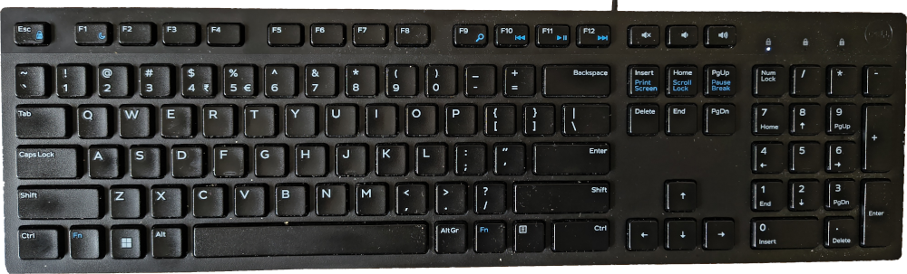

Stell dir vor: du möchtest eine Nachricht auf dem Smartphone schreiben. Doch Moment mal – wo sind denn die Umlaute ä, ö, ü und ß?
Dann halt am Laptop. Doch auch auf der Laptoptastatur findest du zwar einige der Buchstaben, die du brauchst, aber längst nicht alle, die in deiner Sprache vorkommen.
Dir kommt das etwas abgefahren vor? Schwer vorstellbar? Stimmt. Denn als Leute, die Deutsch reden und schreiben, haben wir das Problem mit der fehlenden Tastatur heutzutage (meist) nicht.
Manche werden sich noch an die Frühzeit der Computer erinnern: Häufig gab es nur eine englische Tastatur. Deutsche Umlaute konnten also nicht geschrieben werden. Man behalf sich mit „ae“ statt „ä“ oder„ss“ statt „ß“...
So etwas funktioniert bei Sprachen mit nicht-lateinischen Schriftsystemen leider nicht. Und deshalb ist es hart, aber wahr: Viele Sprachen, die auf der Erde gesprochen werden, kann man nicht auf digitalen Endgeräten tippen, weil es keine Tastaturen für diese Sprachen gibt.
Hier kommt Keyman ins Spiel: Keyman erlaubt es, Tastaturlayouts für beliebige Sprachen zu erstellen und auf allen Plattformen (Windows, Mac, Linux, Android, iOS und im Browser) zu verwenden.
keyman.com bietet 1000 fertige Tastaturlayouts für über 2500 Sprachen. Aber man kann auch neue Tastaturlayouts erstellen.